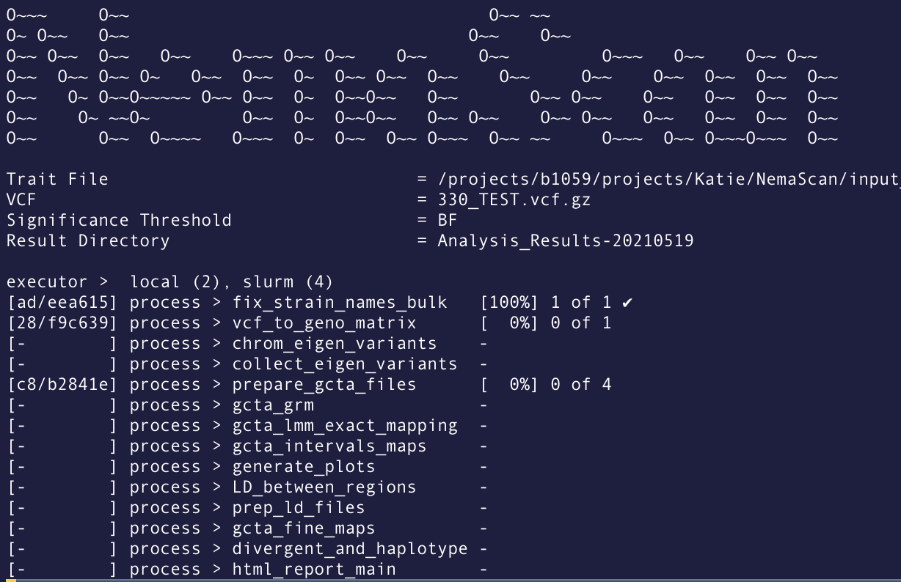

Nextflow¶
Nextflow is an awesome program that allows you to write a computational pipeline by making it simpler to put together many different tasks, maybe even using different programming languages. Nextflow makes parallelism easy and works with SLURM to schedule jobs so you don't have to! Nextflow also supports docker containers and conda enviornments to streamline reproducible pipelines and can be easily adapted to run on different systems - including Google Cloud! Not convinced? Check out this intro.
Installation¶
Nextflow can be installed with two easy steps:
# download with wget or curl
wget -qO- https://get.nextflow.io | bash
# or #
curl -s https://get.nextflow.io | bash
# make binary executable on your system
chmod +x nextflow
# Move nextflow to directory accessible by your $PATH to avoid having to type full path to nextflow each time
# you can check your $PATH with:
echo $PATH
# it likely contains `/usr/local/bin` so you could move nextflow there
mv nextflow /usr/local/bin/
Nextflow versions¶
You might also want to update nextflow or be able to run different versions. This can be done in several different ways
- Update Nextflow
nextflow self-update
- Use a specific version of Nextflow
NXF_VER=20.04.0 nextflow run main.nf
- Use the
nf20conda environment built for AndersenLab pipelines
module load python/anaconda3.6
source activate /projects/b1059/software/conda_envs/nf20_env
(You can check your Nextflow version with nextflow -v or nextflow --version)
Note
If you load this conda environment, it is not necessary to have Nextflow version 20 installed on your system -- you don't even need to have Nextflow installed at all! Because different versions might have updates that affect the running of Nextflow, it is important to keep track of the version of Nextflow you are using, as well as all software packages.
Important
Many of the Andersen Lab pipelines (if not all) are written with the new DSL2 (see below) which requires Nextflow-v20.0+. Loading the nf20 conda environment is a great way to run these pipelines
Quest cluster configuration¶
Configuration files allow you to define the way a pipeline is executed on Quest.
Read the quest documentation on configuration files
Configuration files are defined at a global level in ~/.nextflow/config and on a per-pipeline basis within <pipeline_directory>/nextflow.config. Settings written in <pipeline_directory>/nextflow.config override settings written in ~/.nextflow/config.
Global Configuration: ~/.nextflow/config¶
In order to use nextflow on quest you will need to define some global variables regarding the process. Our lab utilizies nodes and space dedicated to genomics projects. In order to access these resources your account will need to be granted access. Contact Quest and request access to the genomics nodes and project b1042. Once you have access you will need to modify your global configuration. Set your ~/.nextflow/config file to be the following:
process {
executor = 'slurm'
queue = 'genomicsguestA'
clusterOptions = '-A b1042 -t 24:00:00 -e errlog.txt'
}
workDir = "/projects/b1042/AndersenLab/work/<your folder>"
tmpDir = "/projects/b1042/AndersenLab/tmp"
This configuration file does the following:
- Sets the executor to
slurm(which is what Quest uses) - Sets the queue to
genomicsguestAwhich submits jobs to genomics nodes. ThegenomicsguestAwill submit jobs to our dedicated nodes first, which we have high priority. If our dedicated nodes are full, it will submit to other nodes we don't have priority. So far, our lab have 2 dedicated nodes, with 28 cores and related memory (close to 1:5) for each dedicated node. We will have more in the future. clusterOptions- Sets the account tob1042; granting access to genomics-dedicated scratch space.workDir- Sets the working directory to scratch space on b1042. To better organization, Please build your own folder under/projects/b1042/AndersenLab/work/, and define it here. Note: replace '< your folder >' with your nametmpDir- Creates a temporary working directory. This can be used within workflows when necessary.
Running Nextflow¶
Theoretically, running a Nextflow pipeline should be very straightforward (although with any developing pipelines there are always bugs to work out).
Running Nextflow from a remote directory¶
The prefered (and sometimes easiest) way to run a nextflow pipeline can be done in just one single step. When this works (see troubleshooting section below), pipelines can be run without first cloning the git repo. You can just tell Nextflow which git repo to use and it will do the rest! This can be helpful to reduce clutter and avoid making changes to the actual pipeline. Additionally, this method allows you to control which branch and/or commit of the pipeline to run, and Nextflow will automatically track that information for you allowing for great reproducibility.
Note
There is no need to clone a copy of the repo to run pipelines this way. Behind the scenes, nextflow is actually cloning the repo to your home directory and keeping track of branches/commits.
# example command to run the latest version of NemaScan
nextflow run andersenlab/nemascan \
--traitfile input_data/c_elegans/phenotypes/test_pheno.tsv \
--vcf 20210121
# Note: can also write in one line, the \ were used to make the code more readable:
nextflow run andersenlab/nemascan --traitfile input_data/c_elegans/phenotypes/test_pheno.tsv --vcf 20210121
Note
Parameters or arguments to Nextflow scripts are designated with the --. In the case above, there is a parameter called "in" which we are setting to be the test.tsv file.
When Nextflow is running, it will print to the console the name of each process in the pipeline as well as update on the progress of the script:

For example, in the above screenshot from a NemaScan run, there are 14 different processes in the pipeline. Notice that the fix_strain_names_bulk process has already completed! Meanwhile, the vcf_t_geno_matrix process is still running. You can also see that the prepare_gcta_files is actually run 4 times (in this case, because it is run once per 4 traits in my dataset).
Another important piece of information from this Nextflow run is the hash that designates the working directory of each process. the [ad/eea615] next to the fix_strain_names_bulk process indicates that the working directory is located at path_to_nextflow_working_directory/ad/eea615.... This can be helpful if you want to go into that directory to see what is actually happening or trouble shoot errors.
Note
I highly recommend adding this function to your ~/.bash_profile to easily access the Nexflow working directory: gw() {cd /projects/b1042/AndersenLab/work/<your_name>/$1*} so that when you type gw 3f/6a21a5 (the hash Nextflow shows that indicates the specific working directory for a process) you will go to that folder automatically.
Running a different branch of a pipeline¶
Instead of cloning the repo and then remembering to switch branches, you can specify the branch in your nextflow call. This is most beneficial because the pipeline will then keep a record of which branch you used so future you doesn't have to remember.
# the following command runs the "develop" branch of nemascan
# (not recommended unless you know what you are doing, might break)
nextflow run andersenlab/nemascan \
--traitfile input_data/c_elegans/phenotypes/test_pheno.tsv \
--vcf 20210121 \
-r develop
Running a specific commit¶
Sometimes we want to keep the version of a pipeline the same across several different runs (maybe preparing for a manuscript etc.). To do this, you can again use the -r argument and just provide the commit ID which is a long alphanumeric code that can be found on github or in the log of your previous nextflow run.
# the following command runs will always run the exact same code, no matter how many changes to nemascan there are in the future
nextflow run andersenlab/nemascan \
--traitfile input_data/c_elegans/phenotypes/test_pheno.tsv \
--vcf 20210121 \
-r 769a2b75545d7f870a880447dd31482cfc628792
Troubleshooting remote pipelines¶
For some reason, running nextflow remotely sometimes throws errors and I am not 100% sure why. Here are some of the most common errors I see and how to fix them.
1. It doesn't pull the latest commit
- Go to github.com and find the latest commit ID and use that with
-r XXX(see above on running specific commits) - If that doesn't work, you might have to clone the repo and run it locally (see below)
2. It says the "repository may be corrupt"
- I don't understand this error, but I think it happens when you try to run different branches/commits. Usually, I just go to the path where the error says is corrupt and delete the folder with
rm -rf. For example:
rm -rf /home/kek973/.nextflow/assets/andersenlab/nemascan
Warning
You should always be careful when using rm, especially rm -rf. There is no going back. Make certain you want to delete the folder and everything inside it. In this case, it will be fine because nextflow will just clone it again fresh.
Running Nextflow from a local directory¶
Another way to run Nextflow is by first cloning the git repo to your directory and then running the pipeline. This has advantages and disadvantages over running the pipeline remotely (see below), however if you need to make changes to the pipeline specific to your analysis, you will need to follow these steps.
git clone https://github.com/AndersenLab/NemaScan.git
cd NemaScan
nextflow run main.nf --debug
Resume¶
Another great thing about Nextflow is that it caches all the processes that completed successfully, so if you have an error at the middle or end of your pipeline, you can re-run the same Nextflow command with -resume and it will start where it finished last time!
nextflow run andersenlab/nemascan \
--traitfile input_data/c_elegans/phenotypes/test_pheno.tsv \
--vcf 20210121 \
-resume
There is usually no downside to adding -resume, so you can get into the habit of always adding it if you want.
Important
There is some confusion with how the -resume works and sometimes it doesn't work as expected. Check out this and this other guide for more help. One thing I've learned is there is a difference between process.cache = 'deep' vs. 'lenient'.
Writing Nextflow Pipelines¶
See this page for tips on how to get started with your own nextflow pipeline.
Also check out the Nextflow documentation for help getting started!